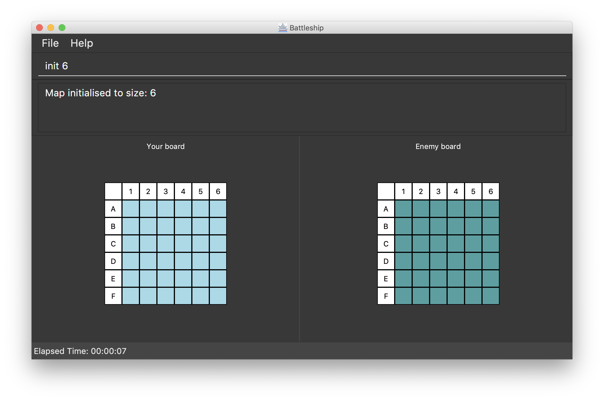
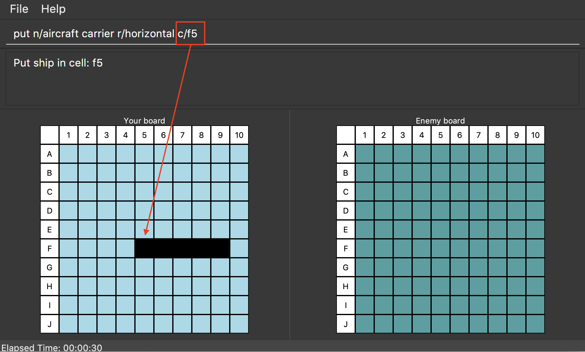

By: Team W14-3 Since: Jan 2019 Licence: MIT
1. Introduction
Ships ahoy! Battleships is a retro game for people who want to have the joy of playing Battleships without the hassle and fuss of a physical game.
Battleships is optimised for people who want to use a Command Line Interface (CLI), while still retaining the benefits of a Graphical User Interface (GUI). It can guarantee many hours of fun, especially between those long and boring periods of the day. Can’t wait to get started? Head over to Section 2, “Quick Start” to fire away!
|
What is a Command Line Interface (CLI) and a Graphical User Interface (GUI)? An interface is how a user interacts with the computer. For example, you can use a mouse to click on a file to open it in Windows or MacOS. This is part of the interface for these operating systems. A Command Line Interface (CLI) interacts with the user by accepting words that are typed in by the user. Conversely, a Graphical User Interface (GUI) interacts with the user visually. It uses icons and graphics to show the user what the program is doing. |
Battleships, as you will see, is a hybrid application. It combines both a CLI and GUI, meaning that the user must type in commands but will see the changes caused by those commands graphically.
2. Quick Start
-
Ensure you have Java version
9or later installed in your Computer. -
Download the latest
addressbook.jarhere. -
Copy the file to the folder you want to use as the home folder for your Address Book.
-
Double-click the file to start the app. The GUI should appear in a few seconds.
-
Type the command in the command box and press Enter to execute it.
e.g. typinghelpand pressing Enter will open the help window. -
Initialise the map:
init 6. -
Deploy your battleships:
-
Deploy your aircraft carrier:
put n/aircraft carrier c/a1 r/h -
Deploy your cruiser:
put n/cruiser c/c1 r/h -
Deploy your destroyer:
put n/destroyer c/e1 r/h
-
-
Start the game:
start game -
Shoot the enemy:
shoot a1 -
End your turn:
end turn
-
Shoot the enemy:
shoot a5
The commands will go on, until either your or the enemy’s fleet is completely destroyed.
Refer to Section 4, “Features” for details of each command.
3. Game Rules
This section will describe the game rules and how to play the classic Battleship game.
Goal
Sink all your opponent’s battleships before they sink yours.
Captain, deploy ships!
Depending on the chosen size of the map, as specified through the init <map_size> command,
the player will be given different numbers of each ship.
The ships available are:
-
Cruiser: size 2
-
Destroyer: size 3
-
Aircraft Carrier: size 5
Here are the respective number of each ship in your fleet, depending on your map size.

Ready, aim, fire!
The Player will always be given the first turn.
The Player may fire shots at the enemy map through the command shoot <a1>.
The player is allowed to continue firing until a miss.
Upon a miss, the player must end their turn here, and relinquish the turn
to the enemy through the command end turn. All’s fair in love and war.
Good Game!
Whoever is first to destroy all their opponent’s ship will be declared the winner.
Had fun? You can view the game statistics with the command stats.
4. Features
Command Format
* Words in UPPER_CASE are the parameters to be supplied by the user e.g. in add n/NAME, NAME is a parameter which can be used as add n/John Doe.
* Items in square brackets are optional e.g n/NAME [t/TAG] can be used as n/John Doe t/friend or as n/John Doe.
* Items with … after them can be used multiple times including zero times e.g. [t/TAG]… can be used as (i.e. 0 times), t/friend, t/friend t/family etc.
* Parameters can be in any order e.g. if the command specifies n/NAME p/PHONE_NUMBER, p/PHONE_NUMBER n/NAME is also acceptable.
|
Pressing the ↑ and ↓ arrows will display the previous and next input respectively in the command box. |
4.1. Viewing help : help
Opens a help window that displays this User Guide.
Format: help
4.2. Preparation Phase
This section describes the commands used in the preparation phase.
4.2.1. Map : init
Initialises both player’s maps to the specified size.
Format: init MAP_SIZE
Example: init 10
Figure 1 below shows how the maps will be displayed in the UI.

Throughout the course of the game, the cells in the map will change colour based on their status.
|
Cell statuses:
|
Figure 2 below shows which colour is used for each status.

4.2.2. Ship Management:
4.2.2.1. Placing a ship on the map: put
Adds a battleship onto the player’s map. The coordinates specified is the position of the battleship’s head.
Format: put n/NAME c/COORDINATES r/ORIENTATION t/TAG
Examples:
-
put n/Destroyer c/a1 r/vertical -
put n/Aircraft Carrier c/b1 r/h
The head of a battleship refers to the top-most and left-most cell of the battleship. When coordinates are specified in the put command, it specifies the coordinates of the head of the battleship, as shown in the figure below.
|

put command refer to the coordinates of the battleship head.
Figure 3 shows how a battleship is put at coordinate a5. The head of the battleship is therefore at a5.

put command will put the battleship at a5, which is the battleship’s head coordinate.The orientation of the battleship can be horizontal or vertical. The orientation of the battleship must be specified. It may be shortened to h or v.
4.2.2.2. Listing all ships : list
Shows a list of all the player’s battleships that are have been deployed on the map. There are four ways of using the list command:
-
List all the battleships.
-
List all the battleships that match a list of tags.
-
List all the battleships of a certain type.
-
List all the battleships of a certain type that match a list of tags.
Format:
-
list -
list t/[TAGS] -
list n/[NAME] -
list n/[NAME] t/[TAGS]
Examples:
-
list -
list t/blueFleet -
list n/destroyer -
list n/destroyer t/blueFleet
The list will show the battleship’s head coordinate, the battleship’s orientation, and the battleship’s tags in square brackets.
The format of each entry in the list is: [NAME] [CURRENT LIFE] at [HEAD COORDINATE] [ORIENTATION] [TAGS].
list commandThe list command can also be used with tags. In the example provided, we have added the tag bluefleet to our destroyer at f7. Using the command list t/bluefleet will allow us to list all the battleships tagged with bluefleet.
list command with tagsThe list command can be used with both the name of the battleship and a list of tags. In this example from Figure 6 and Figure 7, we have created a fleet with two tags: blue and green.
list command showing our fleetWe are able to list a specific battleship by the name of destroyer with the tag blue, as in Figure 7.
list command with name and tags4.2.2.3. Locating ships by name: find
Finds battleships whose names contain any of the given keywords.
Format: find NAME [MORE_NAMES]
Examples:
-
find Vengeance
ReturnsName: RSS Vengeance, Size: 4, Command: true, Position: d2
| The position may not be displayed if the ship has not been placed. |
4.2.2.4. List all tags: listTags
Lists all the tags that have been used to tag the battleships deployed on the map.
Format: listTags
Examples: listTags
| The list of tags is given in square brackets. |
4.2.2.5. Selecting a ship : select
Selects the battleship identified by the index number used in the displayed ship list.
Format: select INDEX
Examples:
-
list
select 2
Selects the 2nd battleship in the inventory. -
find Prinz Eugen
select 1
Selects the 1st battleship in the results of thefindcommand.
4.3. Battle Phase
4.3.1. Beginning the battle: begin
Begins the battle against the computer enemy.
Format: begin
Alternative command: start
4.3.2. Shooting at a coordinate: shoot
Launches an attack against given coordinate on the enemy’s map.
Format: shoot COORDINATES
Alternative commands: attack, fire, hit
Example:
-
shoot A6
4.3.3. Finishing a turn: endturn
Ends your turn and starts Enemy’s turn.
Format: endturn
Alternative command: end
4.4. Retrieving game statistics: stats
Prints a list of statistics related to gameplay, such as accuracy and current hits.
Format: stats
Example:
-
stats
4.5. Exiting the program : exit
Exits the program.
Format: exit
4.6. Saving the data [coming in v2.0]
(placeholder for Statistics saving)
5. FAQ
Q: How do I transfer my data to another Computer?
A: Install the app in the other computer and overwrite the empty data file it creates with the file that contains the data of your previous Address Book folder.
6. Command Summary
| Feature | Format | Purpose | Example |
|---|---|---|---|
Attack |
|
Attacks a selected cell on the enemy map. |
|
Clear |
|
Clears the command box. |
|
End player turn |
|
Relinquish player turn to allow enemy to shoot once. |
|
Help |
|
Opens up the help guide window. |
|
Create map |
|
Initializes the map grid. |
|
List ships |
|
List all available battleships |
|
List tags |
|
List all available battleships by tags |
|
Put ship on map |
|
Place your battleship on the map. |
|
View statistics |
|
Opens a Statistics Window. |
|
Start game |
|
Let enemy place ships on enemy grid. |
|